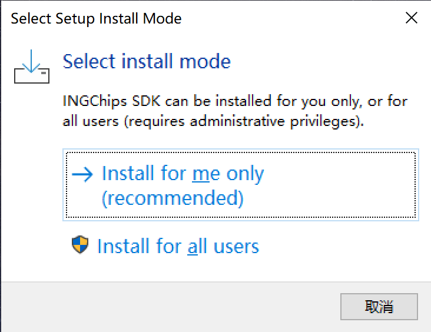
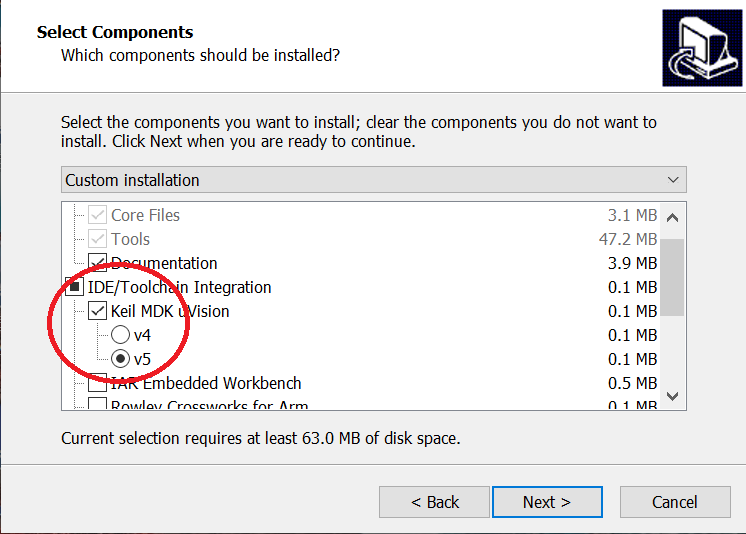

INGChips SDK includes core tools, platform binaries, examples and documentations.
0. Get a dev-board
Buy one on Taobao.
1. Prepare developing environment
SDK itself does not include IDE or compiler. Developers need to download/install such tools. INGChips SDK supports IDEs like Keil MDK, IAR, etc, and GNU Arm Embedded toolchain.
2. Download SDK installer
Select and Download SDK installer for your OS.
3. Install SDK
There two installing mode: If developers are only going to use Keil or Gnu toolchain, then installation does not need to elevate privileges and select “Install for me only”; If developers are going to use IAR or Segger, then installation need to elevate privileges and select “Install for all users”:

“Select Components” page of the installation wizard provides options for IDE/Toolchain integration. To check one IDE/Toolchain means let the installer configure the IDE/Toolchain properly, while it doesn’t mean to install the IDE/Toolchain. Therefore, on this page, check those IDEs or tool-chains that are already installed, and do not check those IDEs or tool-chains that have not been installed.

4. Check docs and examples
After installation, start Wizard to check SDK User Manual and examples.
Please check out User Manual of ING91881B Dev-Board or User Manual of ING91880 Dev-Board for the usages of dev-boards.
Configure Markdown Viewer to view Markdown docs of SDK examples.
5. Build and download examples
Take Peripheral LED as an example. Open the project from Wizard, build it and go back to Wizard to download it. (Please check tutorials in the User Manual of SDK)
After the project is downloaded, the full color LED on the dev-board can be controlled by Apps on mobile phones.
6. Connect with App
Scan and download demo App (ING BLE) for iOS and Android. Open the App, tab “Scan”. A device named “ING LED” will be found, tab it to connect to it. Then in the App, R/G/B components can be changed:
7. Tips
-
Keil µVision is the recommended IDE.
Note: Keil MDK is required, not the 51 version. -
SDK for macOS is lagged behind of Windows and Linux.
-
Dev-board is powered by USB, and there is no need for an external power.
-
Dev-board has built-in DAPLink, just Plug & Play.